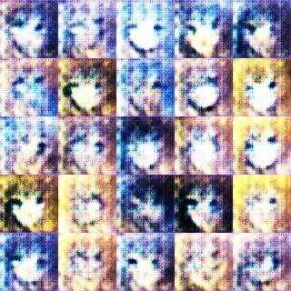
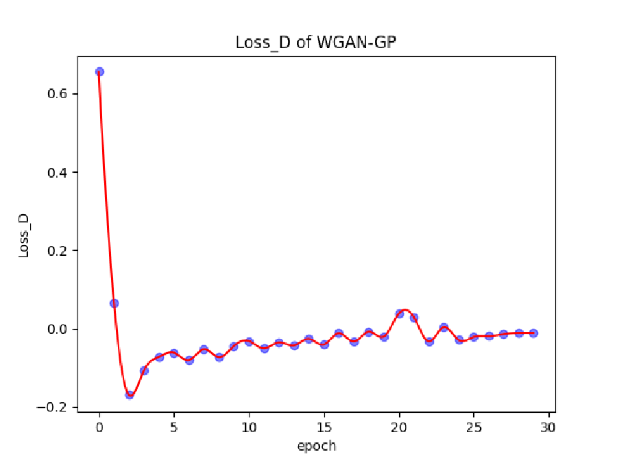

2023 · undergraduate thesis · NCEPU
Stabilising GAN training for anime faces
Three generations of GANs on the same face dataset, and what it took to stop training from collapsing.
The problem
Early GANs on this data produced noise and the same face twice.
- Unstable losses: the discriminator wins early and the generator stops learning.
- Mode collapse: many samples converge on a few faces.
- Hard to judge by eye: needed a number (FID) and a second check.
Try it · same task, three models
From blurred noise to recognisable faces.

Samples are generated images from my runs, not training data.
What fixed it
Three changes did most of the work.
Gradient penalty
Replaced weight clipping (WGAN) with a gradient penalty (WGAN-GP) to keep the critic smooth without crippling it.
Normalisation
Normalisation layers to stop activations from exploding as the networks went deeper.
G / D balance
Tuned how often and how fast each network updates, so neither side runs away.

Result
FID from 391 down to 70.7.
As a second check, I ran a YOLOv5 anime-face detector over the generated grids: a face the detector can find with high confidence is at least face-shaped.
FID (lower is better) compares feature statistics of generated and real images. It can be low for a model that copies the data, so it was read alongside the samples.